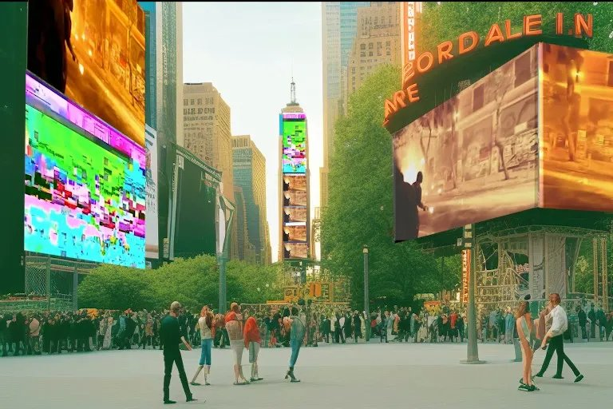
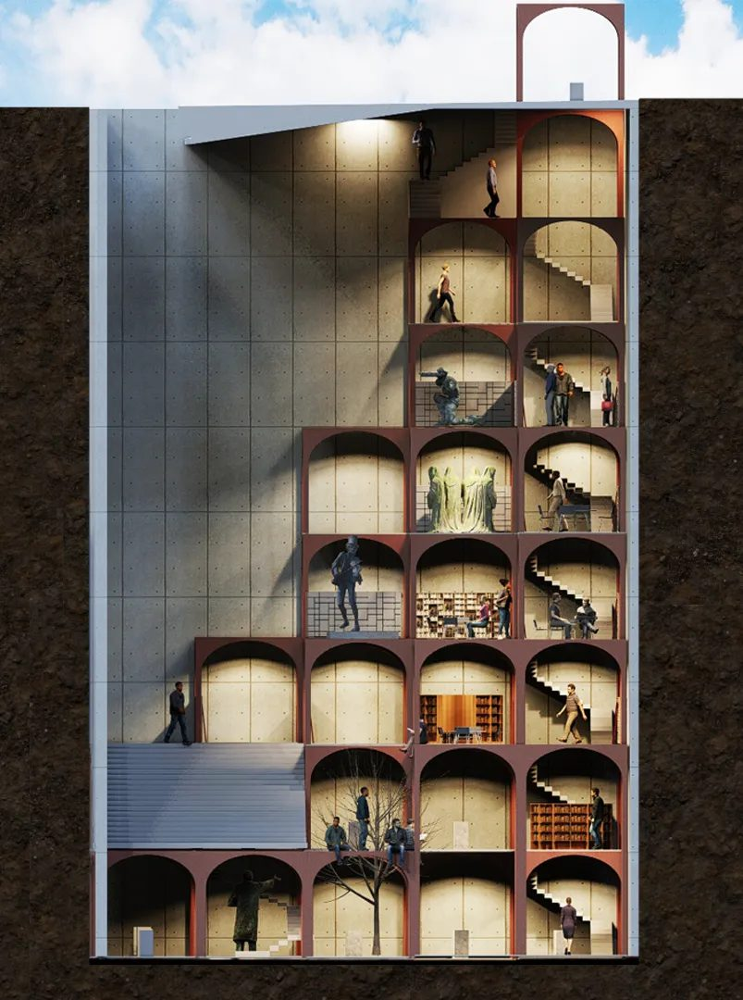
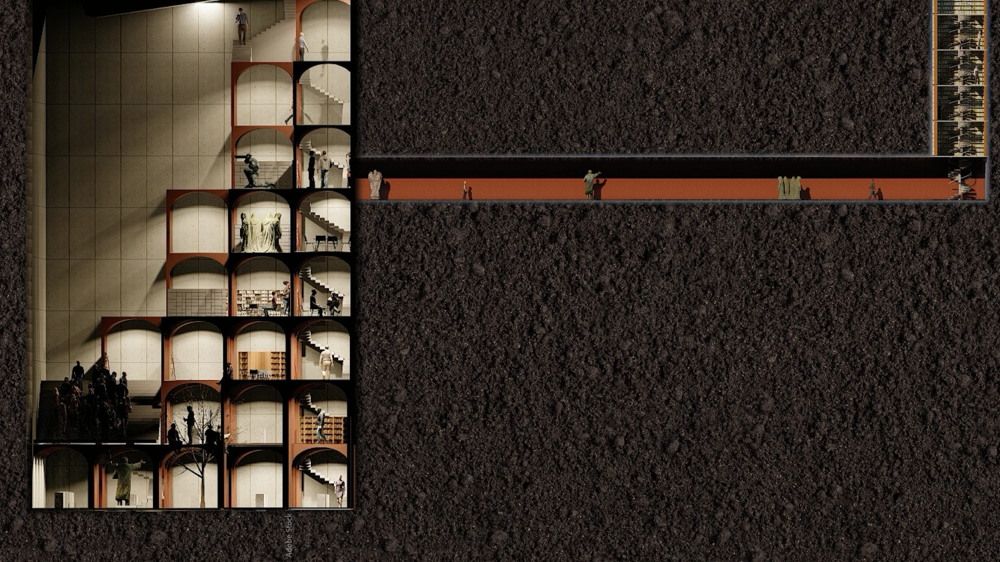
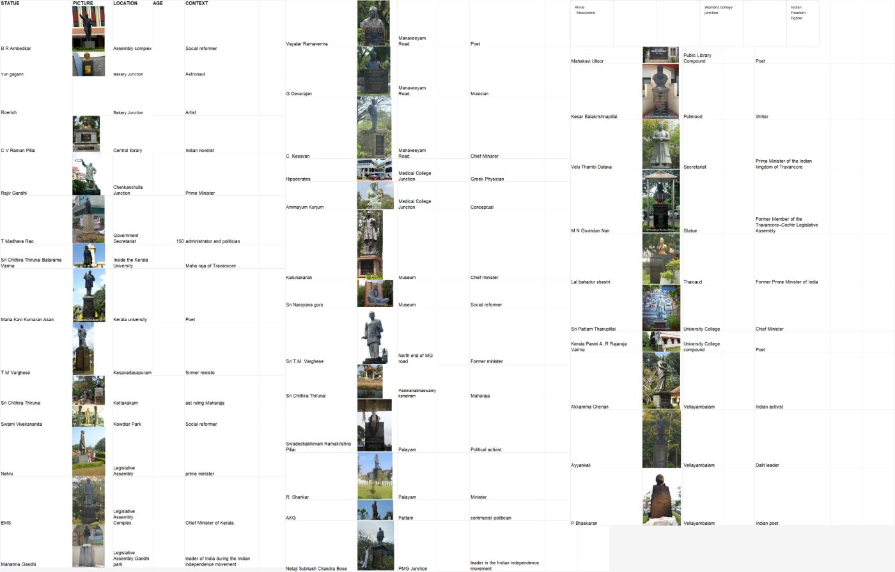
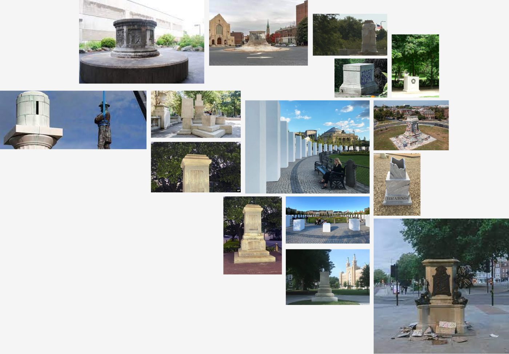
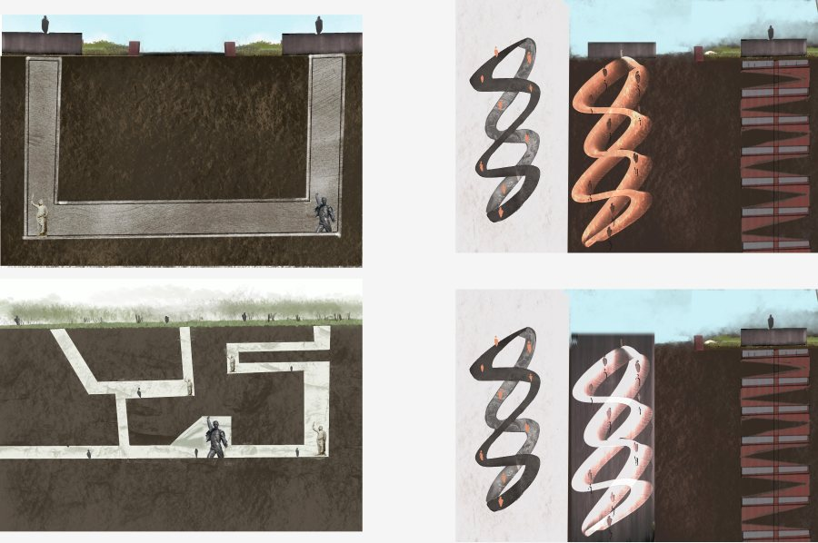
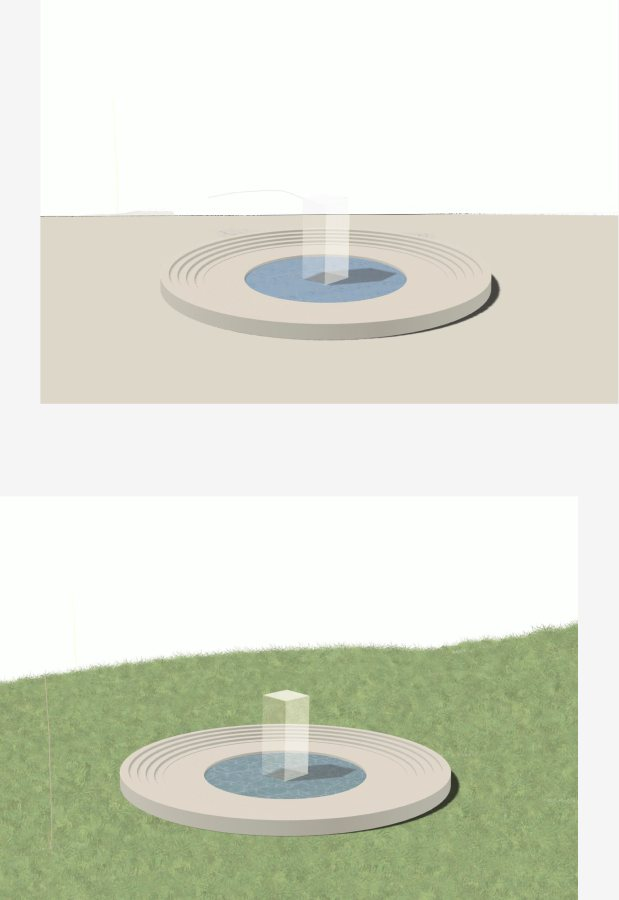

NOTICE 01
All statues removed
Taken down on allegations from an cancel culture. No one asked why.
EnactedA design fiction about statues, suppressed history, and the public screens that decide what each of us gets to see.
The statue of T. Madhava Rao has stood in front of the Government Secretariat for almost 150 years. Trivandrum is often called India's land of statues, with figures at nearly every junction.
The project began by reading these statues as media: things that broadcast who mattered, to people who mostly walk past. Three questions came out of it.
Sculpture · urban experience · navigability · visual pollution · landmarks
The official record · Doshire, 2030
Taken down on allegations from an cancel culture. No one asked why.
EnactedA health measure, we were told. It dulled curiosity, critical thinking and .
EnactedThe rebellion of 1900, the subaltern resistance and a hidden are no longer taught.
SealedThe Federal Association.
In forceHover or tab to the blacked-out words to read them
Digital billboards stand beside the empty pedestals. Some citizens begin to see them glitch, and the glitches show fragments of the suppressed past.
Same billboard, same moment
Parallel reality displays let a single screen show different content to different people. Most of Doshire sees the official message. A few see something else, and follow it underground.

Pandora · the archive beneath the pedestals


Abandoned statues link a network of underground libraries holding banned books, lost music and poetry, and the records of a forgotten resistance.
The community hall is where strangers who followed the glitches meet, and where the archive is opened together. Nobody knows who the coterie are.
Recovered audio, transcribed
Five reels, each opens on Google Drive
How it was made
Reading the city's statues as media
Memory, intent, and the statue's future
Subterranean architecture, impossible spaces
Doshire, 2030: map, laws, history
Glitch displays, Pandora, the coterie
Moving-image prototypes
The project grew on a large research board. These are the ten stops that shaped Doshire, from the first question to the drawings of the underground.
The board opens with a handful of blunt prompts: are statues inflicting ideologies over development, do they force the public to meet them every day, and do they change histories.
Led toThe three questions of chapter one, and the idea that a statue is a broadcast.
Each statue in Trivandrum was recorded with a photograph, a location and a note on who the person was. The list is mostly politicians, poets and reformers, standing at junctions, campuses and government compounds.

Led toDoshire's cast of removed statues, and the choice to treat them as a set rather than one monument.
A set of references on plinths left empty, defaced or reclaimed after the figure came down. In each, the base keeps speaking after the statue is gone.

Led toThe empty pedestal in Renaissance Plaza, and the box on it that opens downward.
A long run of notes on real subterranean architecture, collected to make Pandora believable.
Led toA network with many entrances, and a library as a place of reflection rather than storage.
Two opposed readings sit side by side. One is the pocket park, a small publicly accessible space above a building that people attach and detach to form larger public spaces. The other is a manifesto arguing that streets, squares and parks should be privatised.
Led toThe question under the plaza: when public space is managed, who decides which past it is allowed to show.
Two story drafts sit under this heading. In the first, statues of controversial figures are removed worldwide and the local government keeps the pedestals as a reminder, leaving the city to wonder what to do with its past. In the second, history becomes a biased medium: textbooks are rewritten, media follow an ideology, and people begin to revolt against explanation bias.
Both end on the same turn, that a society needs to hold all the perspectives and decide for itself, rather than lean on a single unreliable narrator.
Led toThe coterie's method: not to replace the official story, but to offer several.
The reading starts with Ranajit Guha's critique that conventional Indian histories were shaped by colonial and ruling-class views and left out the marginalised. From there the board turns to Kerala: peasant movements, the Mappila peasantry of 1921, and Theyyam as an archive of a subaltern community in Northern Kerala. The notes also record that this archive carries mostly men's versions and leaves out women's voices.
Led toThe forgotten rebellion of 1900, and a hidden record that is partial even when it is kept.
The board keeps the Pandora myth: every trouble escapes the jar, and one spirit, hope, stays inside when the lid shuts. Beside it sits a note on cryptography, which preserves the idea of an original plain message and offers an image of history as a journey into a hidden past.
Led toThe name Pandora, and a city whose surface is a cipher for what lies below it.
A plain model of how a protest moves from a spark to its aftermath.
Led toThe protest scenes Abel sees in Pandora, and the order in which the suppressed past is staged.
Section studies of the buried world: a long tunnel run with statues at its ends, a branching network with figures in its rooms, and spiral descents that pass through the ground. Two further frames on the board, titled Time capsule and House of faith, hold renders of a circular pool with a glass monolith.


Led toThe vertical staircase and the dark tunnel of the story scene.
A statue is a broadcast about who mattered. Removing one is also an editorial act, never a neutral one.
Public technology can split a crowd into private versions of reality, or reveal something to all of them at once.
In Doshire, a malfunction becomes a reason for people who do not know each other to meet and act together.
The fiction becomes a research instrument when it leaves the screen and enters a public square.
A monument or public screen malfunctions, as a performative intervention with theatre artists.
Who stops, who gathers, who talks to a stranger, and for how long.
Short interviews with passers-by about what they saw and why they stayed.
Change the glitch, the place and the time, then compare the encounters.